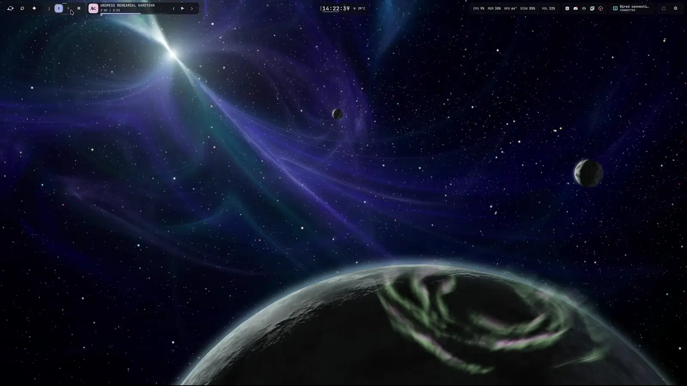
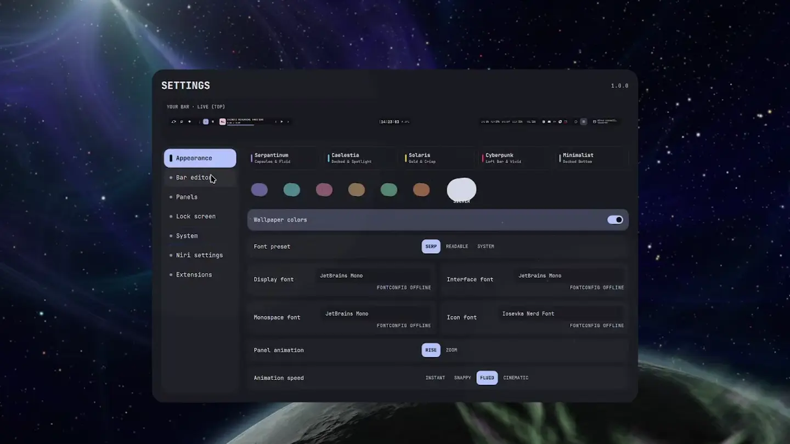
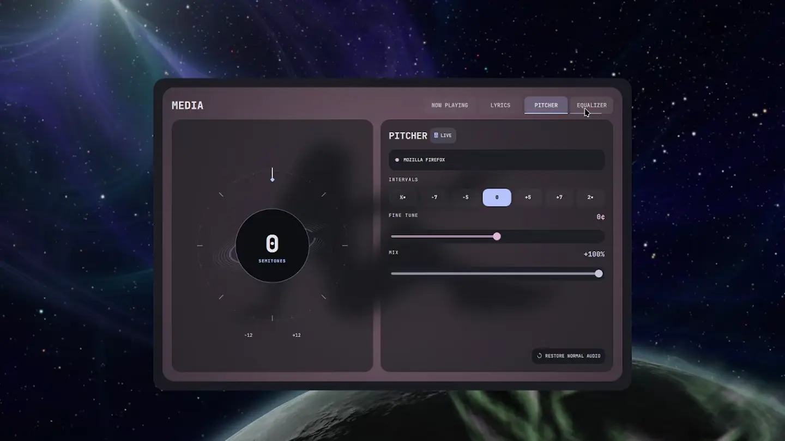

Out of
orbit.
Your desktop should have a personality.
Preferably yours.
Orbiting wallpapers. Fluid instruments. Music you can bend. A Linux shell for people who were never going to leave the defaults alone.
Meet your new instruments ↓Yes, this is
someone’s desktop.

Five instruments.
One strange little universe.
Your essentials. In formation.
The bar that stays with you. Workspaces, media, time and system readings, arranged exactly where your hands expect them.

Room to get into it.
Search, settings, calendar, audio and the everyday tools that deserve more than a tiny dropdown. Open a surface. Do your thing. Carry on.

Find your own orbit.
A wallpaper library with a gravitational pull. Browse your collection, preview another world, and make it home.

For people who feel the bass.
Playback, lyrics, spectrum and audio controls in one expressive console. A little more ceremony for the music that gets you through the day.

A good place to disappear.
A separate session veil for when you step away. Preview its appearance first, then use the real session lock when you are ready.
Useful doesn’t
have to mean
boring as hell.
Tonantzintla is an observatory you operate. Strange silhouettes, orbiting worlds, surfaces that unfold instead of just appearing. The eccentricity is deliberate.
So is the useful part. Keep the controls legible. Give every action a clear destination. Make the desktop feel like somewhere you actually want to spend your time.
Choose an accent.
Try a different accent on this site. In the shell, your wallpaper, palette and arrangement make the desktop your own.
Install Tonantzintla.
A shell for Niri, built with Quickshell.
Start with the supported setup: Arch Linux or Obarun.
sudo pacman -S --needed git rust git clone https://github.com/deltadasher/Tonantzintla.git cd Tonantzintla ./bin/blackhole install --profile recommended --niri keep --umbra lock ~/.local/bin/blackhole start
Keeps your existing Niri configuration. On Obarun, enable obcommunity first. Read the installation guide before running.